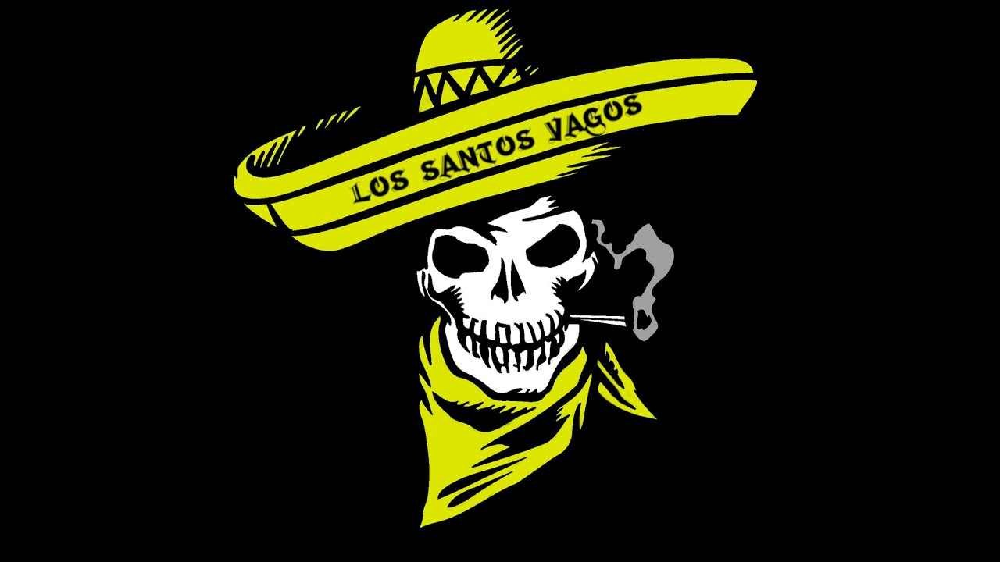
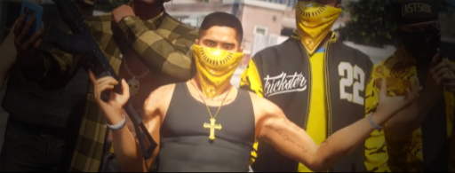

Die Los Santos Vagos Familie ist eine mexikanische Streetgang, welche durch die sozialen Verhältnisse Mexikos und dem daraus entstandenen Bürgerkrieg entstand. Zur damaligen Zeit flohen viele Mexikaner in die Vereinigten Staaten. Einige flohen nach Los Santos. Anfangs waren die Vagos nur eine Freundesgruppe, die ab und zu mal Kriminelle Sachen machten. Später wurde das Ganze zu was Ernstem. Die Los Santos Vagos wurden im Jahre 1985 von einem Drogendealer gegründet und sind seitdem in Los Santos vertreten. Sie sind dafür bekannt, Drogen und Waffen zu verbreiten. In der Gang gab es viele Leute, die versucht haben die Vagos aufzubauen. Doch das Problem waren die anderen Gangs. Jedesmal als es gut lief und sie versuchten sich aufzubauen wurden sie von den Grove Street Families und den Front Yard Ballas angegriffen. Warum? Ganz einfach, die beiden größten Gangs wollten natürlich keine Konkurrenz haben. Die Vagos verloren Mitglieder und wurden schwach. Doch eine Hoffnung gibt es noch, nämlich Ricardo Rodriguez.